Map
The map 就是一个web地图绘制应用程序中间那一块
并表现为 OpenLayers.Map 类的实例.
- map 的一些重要属性:
投影,
分辨率(zoom levels), units, etc
- 一个 map 包含一个或多个 图层
- 一个 map 能包含一个或多个控件
一个应用程序可以有一个或多个地图 但是图层和控件只能应用于一个地图
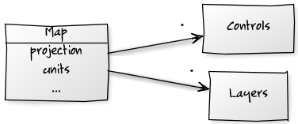
示例
为地图创建一个HTML元素:
创建一个OpenLayers.Map实例:
Map
Methods
map 拥有很多方法
-
Layers
addLayer(),
getLayer(),
removeLayer(), ...
-
Controls
addControl(),
getControl(),
removeCotnrol(), ...
-
地图移动：
zoomTo(),
zoomIn(),
zoomOut(),
pan(),
panTo(), ...
-
当前地图状态信息:
getZoom(),
getCenter(),
getUnits(),
getScale(),
getProjection(), ...
Examples...
Chapter 1 - Mapping Basics
-
Creating simple map:
How to create a very simple map
-
Playing with map options:
How to use some map properties
-
Managing map's stack layers:
How to manage layers withint the map
-
Moving around the map view:
How to manage the map's viewport
图层
The concept of Layer allows us to group/classify the elements that
must be rendered on the Map
所有的图层都继承自基类 OpenLayers.Layer
name每一个图层都有一个名称（在地图切换控件中用到）opacity 图层透明度（0到1）projection 图层中地理数据的投影信息maxExtent 数据的最大地理范围resolutions 一个递减的地图分辨率集合
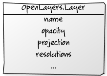
图层类别
主要分为两大类:
- 栅格Raster (for imagery) 和
- 矢量Vector (for features)
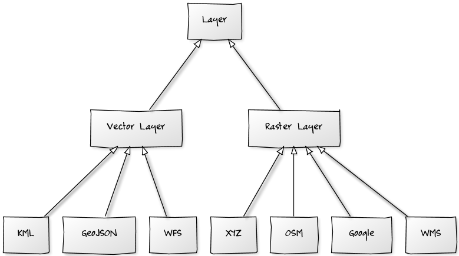
Base Layers and Overlays
OpenLayers differentiates two kinds of layers: Base layers and
Overlays.
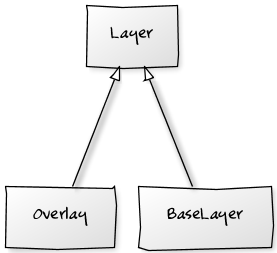
- Base layers controls several aspects of the map (like the projection
used by the Map)
- Base layers are mutually exclusive, only one can be shown at a time
- There could be any number of Overlays
- The
isBaseLayer property inherited from
OpenLayers.Layer determines the kind of layer.
- The
allOverlays property of the
OpenLayers.Map class allows all layers works as overlays.
Examples...
Chapter 1 - Mapping Basics
-
Creating simple map:
Basic example on how to create an
OpenLayers.Map instance.
-
Base and non-base layers:
This example plays with the
OpenLayers.Layer isBaseLayer property
-
Avoiding base layers:
This example shows how to force all layers to act
as overlays using the
OpenLayers.Map allOverlays property
栅格图层
- Raster layers 显示来自不同服务器（Google, Bing, a WMS server, OSM, etc）上的图片 (or bitmaps)
- 所有的Raster 图层都继承自基类OpenLayers.Layer. 这里主要有两个子类:
- OpenLayers.Layer.Image类可以创建由一张图片构成的图层
- OpenLayers.Layer.Grid 类把地图视图分解为格状的瓦片并提供一些基础功能
Raster layers
Google Maps
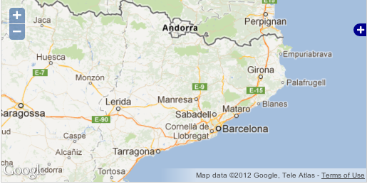
|
Bing
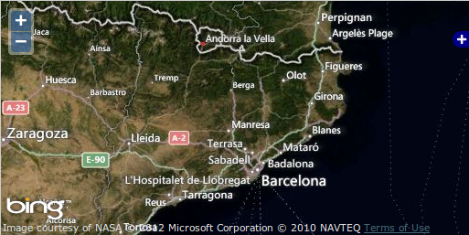
|
OpenStreetMap
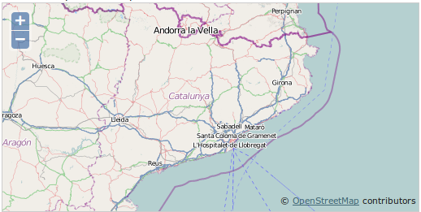
|
WMS servers
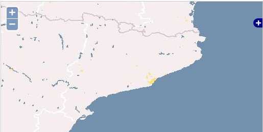
|
MapQuest
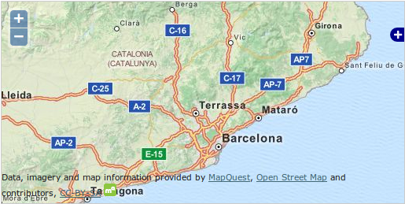
|
Image file
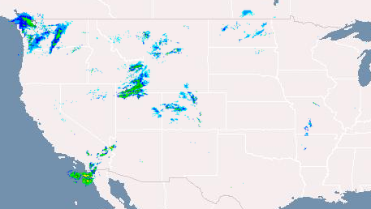
|
Examples...
Chapter 2 - Raster Layers
-
Using Goole Maps imagery:
Shows how to work with Google Maps API v3
OpenLayers.Map instance.
-
Adding WMS layer :
This example show how to create
OpenLayers.Layer.WMS layers
and play with isBaseLayer property
-
Changing layer opacity:
To see how to change a layers opacity
property
-
Using WMS with singleTile mode:
This example shows how to work in singleTile mode on WMS layers
-
Buffering the layer data:
Shows how to improve navigation preloading tiles using the
buffer property
矢量图层
Vector layers 可以让我们处理来自不同
数据源的features
一个 feature 就是现实世界中各地物的数字化表示: 城市, 河流, 山川, ...
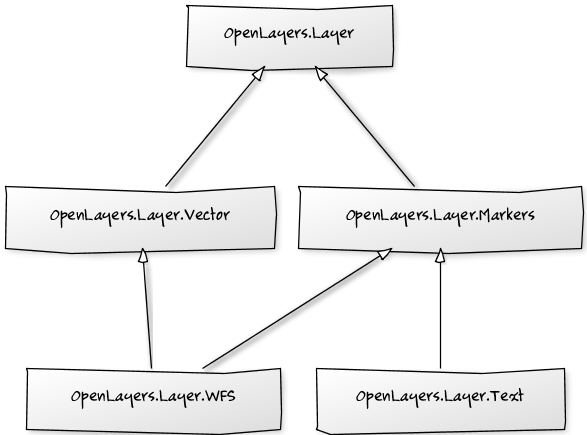
Notes
- 在OpenLayers 2.12OpenLayers.Layer.WFS 已弃用 !!!
矢量图层
WFS
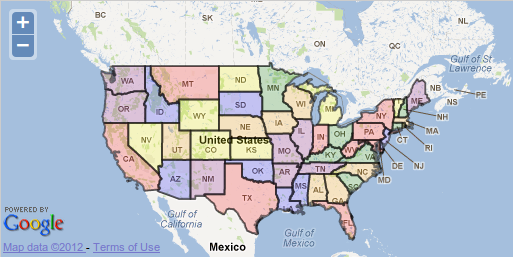
|
KML
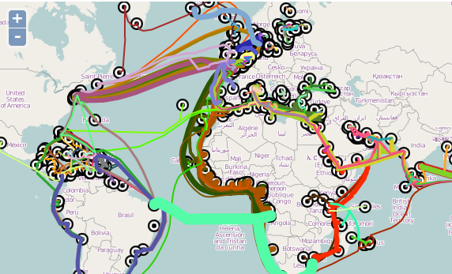
|
Features
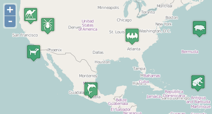
|
Clusters
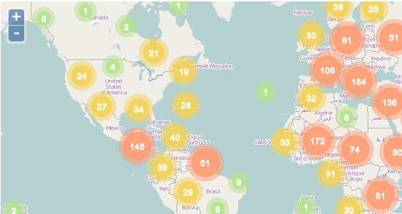
|
Features
- 一个feature 可以有附加多个属性：
名称, 人口, etc
- 一个feature 有一个可视化
样式 如: pointRadius, lineWidth, ... (详见
OpenLayers.Feature.Vector.style 常量)
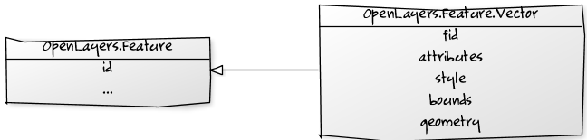
- OpenLayers.Feature 类 定义一个基本的 feature
- OpenLayers.Feature.Vector 类 应用于 vector layers
Geometries
- 一个 feature 是通过
geometry来表现的其几何信息 : point, line, polygon, ...
这些对象的父类都是 OpenLayers.Geometry
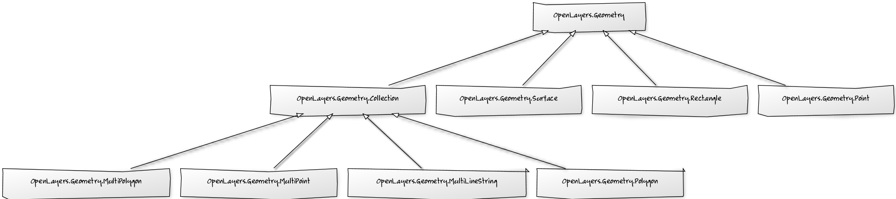
Note
- geometry通过style渲染来表现feature
,如果没有定义geometry的style将使用 vector layer
style
- OpenLayers 实现了Simple Feature
Access 标准, 一种通用的地理数据存储模型
Renderers
在浏览器里绘制图形有多种技术 (只要是
HTML5 Canvas element
和 SVG)
我们不需要去关心features是怎么在浏览器里渲染的.
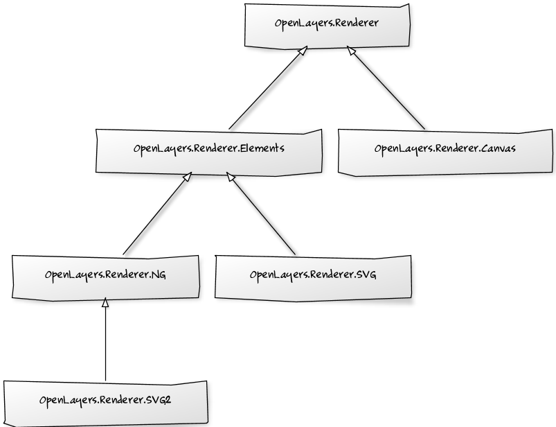
Protocols & Formats
一个 vector 图层加载数据有多种
数据源 (HTTP, WFS, SOS, ...) and 多种
数据格式 (GeoJSON, GML, KML, ...)
- protocol规定一个vector layer如何与数据源通信
. 需继承自基类
OpenLayers.Protocol
-
format 规定 features 如何读写. 需继承自基类
OpenLayers.Format
Styles, Rules & Filters
给一个feature定义样式有如下几种方法:
- 可以给feature的
style属性定义一个symbolizer hash:
- 可以给图层的
style属性定义一个symbolizer hash
- 给图层的styleMap 属性构建一个比较复杂的OpenLayers.StyleMap:
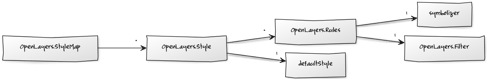
Strategies
Strategies 确定 vector layer某方面的行为
- A vector layer 可以附加多个
Strategies
- Strategies 必须要添加到OpenLayers.Layer.Vector的属性strategies 数值中
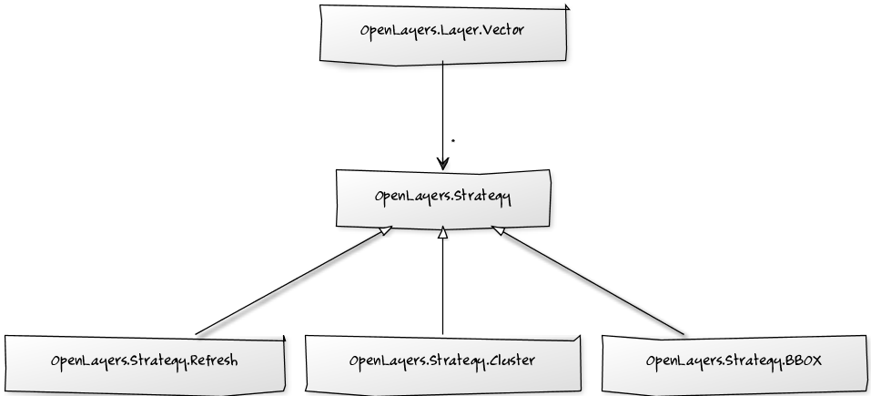
一些普通的Strategies...
- OpenLayers.Strategy.Refresh自动刷新图层
- OpenLayers.Strategy.Cluster 对features进行集聚
- OpenLayers.Strategy.Fixed只加载一次数据
小结...
当一个图层被绘制时:
- layer 调用protocol 来加载数据
- protocol和数据源通信并读取数据
- protocol通过特定的format
把数据转换为features 并添加到图层
- layer 委托renderer 渲染features
- renderer使用适当的geometry 和style 来绘制每一个feature
Examples...
Chapter 3 - Vector Layers
-
Adding a GML layer:
Basic usage of a vector layer loading GML data
-
Creates features programmatically:
Show how we can create new features without the need to read them
-
Reading and creating features from a WKT:
How to get features using
OpenLayers.Format directly
-
Reading data using Potocols directly:
How to get features using
OpenLayers.Format directly
-
Using the cluster strategy:
Example on how to use the cluster strategy
A nice implementation of cluster strategy with
animations on zoom change
can be found in the acanimal
GitHub repository.
More examples...
Chapter 7 - Stylings
-
Styling features using symbolizers:
Basic usage of hash symbolizers
-
Working with unique value rules:
A way to style features depending on its attribute values
-
Defining custom rules to style features:
A sample working with styles, rules and filters
-
Improving style using StyleMap and feature's attributes replacement:
Improving styling using the attribute replacement capabilities
The truth about OpenLayers...
我们用OpenLayers写的大多数JavaScript 代码将转化为HTML elements !!!

Events
Events 就像是我们应用程序的神经 (行动 -> 反应)
- HTML elements 可以触发 events: click, mouse enter, etc
- OpenLayers 可触发的 events:
- OpenLayers.Map:
move,
zoomend,
addlayer, ...
- OpenLayers.Layer:
loadstart,
loadend,
added, ...
- OpenLayers.Layer.Vector:
featuresadded,
featureremoved,
vertexmodified, ...
通过查看API文档（或源代码）可以了解每个OpenLayers 类所拥有的事件
... OpenLayers 如何实现这些events ?
- 多数OpenLayers 类有一个event 属性（一个 OpenLayers.Events实例）
- OpenLayers.Events是一个帮助类用来注册和监听事件
Listening...
DOM element 如何监听events?
HTML button:
JavaScript code:
OpenLayers如何监听 events?
- 使用events.on() 方法:
- 使用events.register() 方法:
Examples...
Chapter 4 - Events
-
Creating a side by side map comparator:
Listening for Map events and synchronize two maps
-
Implementing a work in progress indicator for map layers:
Practical use for listening on layer events
-
Listening for vector layer features' events:
Working with events on vector layers
-
Listening for non OpenLayers events:
Shows the use of OpenLayers.Event.observe()
method to listeningfor non OpenLayers components.
Controls
Controls 用来与 Map进行交互
Controls 通过可以的小部件 来操作地图 (比如 navigation 或 zoom controls)
-
OpenLayers 提供了地图几乎所有操作的 controls : navigation, zoom, feature selection,
feature edition, etc
-
所有controls 都继承自基类OpenLayers.Control:
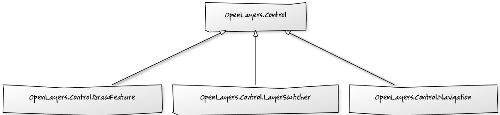
Controls
- 在Map中添加（或删除）一个Control
- Control 被activaded 或 deactivated
- Control 可以被放到Map元素之外
HTML code:
JavaScript code:
Examples...
Chapter 5 - Controls
-
Adding and removing controls:
Example on how to add and remove controls dynamically
-
Adding a navigation history control:
Show usage for the navigation history control
-
Editing features on multiple vector layers:
How to create features in vector layers with
the OpenLayers.Control.EditingToolbar control
-
Getting feature information from data source:
usage of the OpenLayers.Control.GetFeature control to get feature data from any source
References
- OpenLayers Begginers
- OpenLayers Cookbook
- OpenLayers source code
- OpenLayers API documentation
- http://docs.openlayers.org/library/index.html
Thanks for coming !!!
 ←
→
←
→
/
#